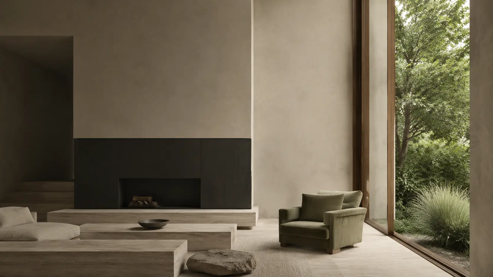
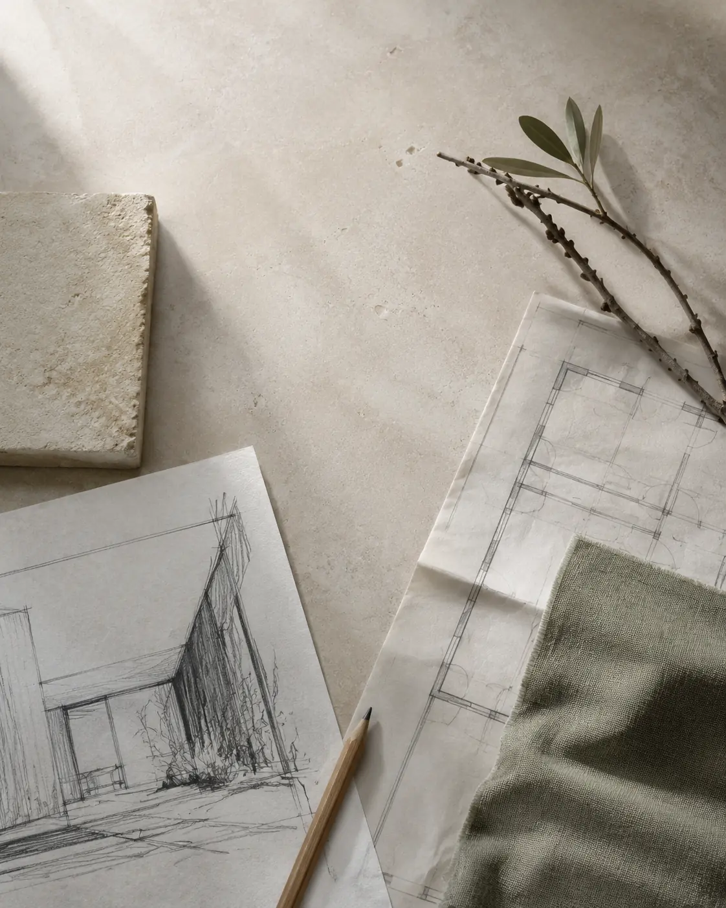
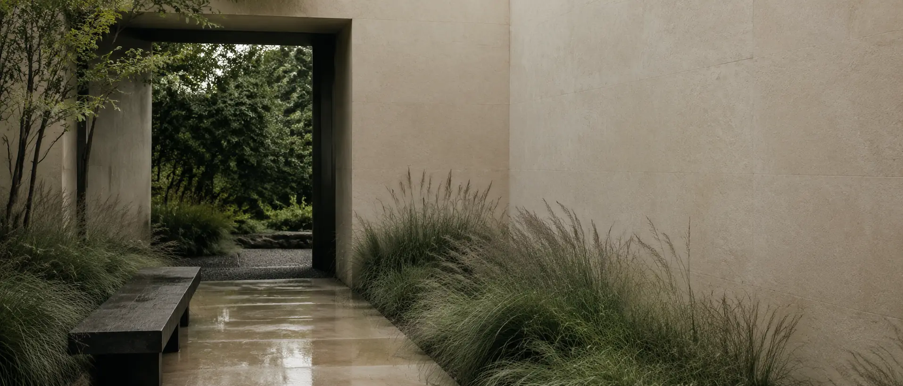

Pracownia Oversize
od 2016
01 Pracownia
Dom nie jest serią pomieszczeń.
Jest miejscem, które pracuje z Tobą.

Łączymy wnętrze, światło oraz to, co dzieje się za oknem. Dzięki temu projekt nie kończy się na ładnym ujęciu — daje porządek w codziennym życiu i podczas realizacji.
Opowiedz o swojej inwestycji ↗- Architekt
- Małgorzata Warywoda
- Pracownia
- Jasło / współpraca online
- Obszar
- Wnętrza, krajobraz, detal
02 Wybrane realizacje
Nie szukamy jednego stylu.
Szukamy właściwych proporcji.
Najedź na kadr lub kliknij, aby zobaczyć detal.

03 Wnętrze / ogród
Granica między domem a ogrodem
może po prostu zniknąć.
Widok, nawierzchnia, cień i rytm przejścia planujemy razem z wnętrzem. To właśnie pomiędzy strefami często powstaje najważniejszy klimat domu.
Projektujemy całość,
nie osobne fragmenty.
04 / Podejście
„Dobry projekt nie domaga się uwagi.
Po prostu dobrze się w nim żyje.”
05 Współpraca
Spokojny proces.
Jasne kolejne kroki.
- 01
Najpierw pytamy.
O miejsce, codzienność, potrzeby i budżet. Bez tej rozmowy nie ma dobrego punktu wyjścia.
- 02
Potem porządkujemy.
Układ, materiały, światło i najważniejsze decyzje wchodzą w jedną spójną koncepcję.
- 03
Na końcu ułatwiamy realizację.
Dokumentacja i wsparcie podczas prac dają wykonawcom konkret, a Tobie mniej niewiadomych.
06 Zakres
Wybierz punkt,
od którego zaczynamy.
01Wnętrza
+
Konsultacje, układ funkcjonalny, koncepcja, wizualizacje, projekty mebli i dokumentacja dla wykonawców.
Koncepcja · projekt wykonawczy · nadzór autorski02Krajobraz
+
Ogrody, tarasy, elewacje, nawierzchnie oraz to, co dzieje się wokół domu — od pierwszej analizy terenu.
Nasadzenia · nawierzchnie · mała architektura03Wsparcie przy realizacji
+
Pomagamy przełożyć projekt na konkretne decyzje podczas budowy oraz rozmów z wykonawcami.
Nadzór · zestawienia · konsultacje onlineJest miejsce,
które chcesz dobrze zacząć?
Pierwsza wiadomość wystarczy. Wrócimy z pytaniami i propozycją kolejnego kroku.